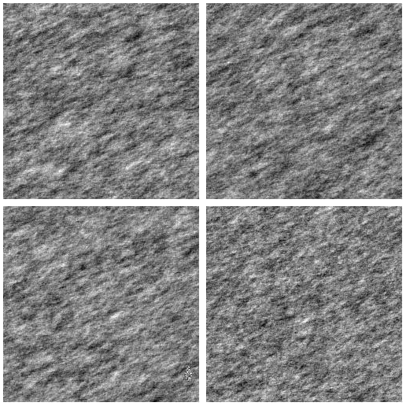
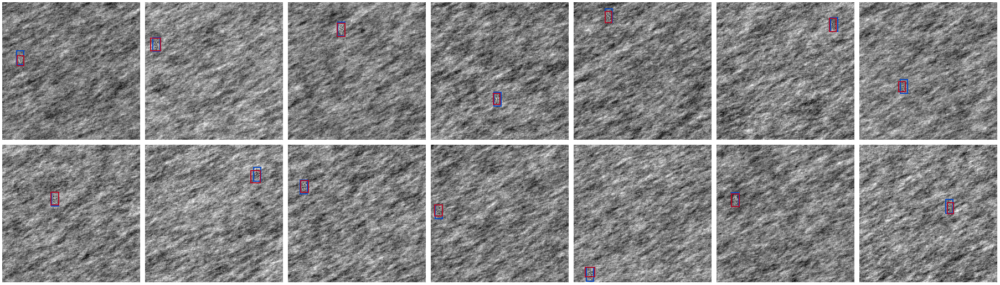

Overview
A decision model can look at an image. decide() takes
images in the argument image, alone or with
text. This vignette shows the image arguments on one task:
does a woven pattern have a flaw? It runs four models:
- Jev, from TypeSafe, with
decider_typesafe(). - The Decisions API of OpenAI, with
decider_openai(). Its default model isgpt-6-luna. - The Decisions API of Google Gemini, with
decider_gemini(). Its model isgemini-decision-1(beta). - Clef-Flash, on a local SGLang server, with
decider_systemone().
The results below come from live calls. The package saved them in the
package folder extdata, so this vignette builds without a
key and without a network. The code that made them is in
vignette_results.R in the folder data-raw of
the GitHub
repository.
The section “Defect location” shows locate(), which asks
Jev where the defect is (experimental).
Microsoft-Decision-1 and Laya read text only. Venn
(decider_venn()) reads one image but takes no reference
images. They are not in this vignette.
Image inputs
image takes one of these for each input:
- a file path,
- a URL,
- a magick image, or a list of magick images.
text and image can go together. Element
i of text and element i of
image make input i. The package needs the
magick package to read images. It turns each image upright, converts it
to sRGB and sends it as a JPEG.
Data
The package has the dataset textiles. It has 51
simulated images of a woven textile, 250 x 250 pixels. They are in the
folder
system.file("extdata", "textiles", package = "decisions").
About half of them show a flaw in the pattern. See
?textiles for the details.
Source: the images come from the R package spc4sts. The public repository fmegahed/qe_genai shares them (MIT license, https://github.com/fmegahed/qe_genai).
Bui, A. T., & Apley, D. W. (2021). spc4sts: Statistical process control for stochastic textured surfaces in R. Journal of Quality Technology, 53(3), 219-242. https://doi.org/10.1080/00224065.2019.1707730
The CRAN page of spc4sts, which links its reference manual: https://CRAN.R-project.org/package=spc4sts
textile_dir <- system.file("extdata", "textiles", package = "decisions")
textiles <- textiles |>
dplyr::mutate(path = file.path(textile_dir, file))
dplyr::count(textiles, role, class)
#> # A tibble: 5 × 3
#> role class n
#> <chr> <fct> <int>
#> 1 box_reference defective 1
#> 2 input nominal 23
#> 3 input defective 23
#> 4 reference nominal 2
#> 5 reference defective 2The column role splits the images. Four images are
references, two for each class. 46 images are the inputs. One image,
with the role box_reference, is for locate()
(section “Defect location”). The column class is the
truth.
The picture shows the four references. The top row has the two
nominal images. The bottom row has the two
defective images.
reference_files <- textiles |>
dplyr::filter(role == "reference") |>
dplyr::arrange(class, reference_rank)
reference_files$path |>
magick::image_read() |>
magick::image_montage(tile = "2x2", geometry = "250x250+4+4")
References
A reference is an image that shows what an answer looks like.
references is a named list. Each name is an answer of the
question. Each element has one or more images. The package prepares each
reference once and sends it with every input.
Question
One choice question has two answers. The descriptions are short. They say what the model sees.
weave <- question_choice(
"Does the woven pattern in `inspection_image` have a flaw?",
c(
nominal = "The weave is regular. The pattern repeats with no break.",
defective = "The weave has a flaw. A part of the pattern is broken, or the whole pattern is distorted."
)
)Image arguments
Three arguments set how the package prepares an image. They apply to the inputs and to the references.
| Argument | Meaning |
|---|---|
max_size |
The longest side in pixels after the resize. The default is 768.
NULL keeps the size. |
upscale |
TRUE enlarges an image that is smaller than
max_size. The default is FALSE. |
crop |
"none" (default), "center" (a centered
square), a box, or a function. |
A box is c(x, y, width, height) in pixels. The origin is
the top left of the image. The crop happens before the resize.
The textiles are 250 x 250 pixels. TypeSafe refuses images smaller
than 280 pixels. So Jev needs upscale = TRUE. With
max_size = 768, each image grows to 768 pixels.
Crop function
crop can be a function. It takes the magick image and
returns a box. This is the hook for an object detection model. A
detector would return the box of the object here, and the model would
see the object only. The function below is simple: it trims a border of
12 pixels.
trim_border <- function(image) {
info <- magick::image_info(image)
c(12, 12, info$width - 24, info$height - 24)
}Three hosted models
purrr::map() runs decide() once for each
hosted decider. Each call sends 46 images. Each request holds the four
references and one input.
deciders <- list(jev = decider_typesafe(), openai = decider_openai(), gemini = decider_gemini())
answers <- purrr::map(deciders, \(decider) {
decide(
decider, weave,
image = inputs$path, references = references,
max_size = 768, upscale = TRUE
)
})Gemini without references
Gemini also ran with no reference images, to show what the references
add. The call is the same, with no references. Gemini puts
the reference images in the input of its request, before the image to
inspect.
answers$`gemini (no references)` <- decide(
decider_gemini(), weave,
image = inputs$path, max_size = 768, upscale = TRUE
)Clef-Flash
Clef-Flash is a model of Cloudflare. It runs on your computer, on a
GPU, and it costs nothing per call. The shell command below starts a
server with Docker. It is not run here. The image
lmsysorg/sglang:dev-clef holds SGLang. The first start
downloads the model.
docker run --gpus all --shm-size 8g --ipc=host -p 30000:30000 \
lmsysorg/sglang:dev-clef \
sglang serve --model-path Cloudflare/clef-flash --host 0.0.0.0 --port 30000When GET http://localhost:30000/health answers, the
server is ready. Clef-Flash reads the images in a list, so
image_format = "images". The server needs no key. With a
free model we can compare image settings: the same inputs with
max_size = 768, with max_size = 512, and with
the crop function.
clef <- decider_systemone(
"http://localhost:30000", "Cloudflare/clef-flash",
image_format = "images"
)
settings <- list(
`max_size 768` = list(max_size = 768),
`max_size 512` = list(max_size = 512),
`crop trim` = list(max_size = 768, crop = trim_border)
)
clef_answers <- purrr::map(settings, \(setting) {
rlang::exec(
decide, clef, weave,
image = inputs$path, references = references, upscale = TRUE,
!!!setting
)
})Performance
We bind the tibbles and add the truth. Each tibble has 46 rows, in
the order of the inputs. The levels of truth are
nominal and defective. The event is the second
level, so roc_auc_vec() gets
event_level = "second".
all_answers <- c(answers, clef_answers)
results <- all_answers |>
dplyr::bind_rows(.id = "model") |>
dplyr::mutate(
model = factor(model, levels = names(all_answers)),
truth = rep(inputs$class, times = length(all_answers))
)The next table has one row for each model and setting.
roc_auc is the area under the ROC curve, from
.pred_defective. errors is the number of rows
with an error. A row with an error has NA answers, and
yardstick removes it.
results |>
dplyr::group_by(model) |>
dplyr::summarise(
roc_auc = yardstick::roc_auc_vec(truth, .pred_defective, event_level = "second"),
errors = sum(!is.na(.error)),
input_tokens = sum(.input_tokens, na.rm = TRUE),
cost_usd = if (all(is.na(.cost))) NA_real_ else sum(.cost, na.rm = TRUE),
median_seconds = median(.seconds, na.rm = TRUE)
)
#> # A tibble: 7 × 6
#> model roc_auc errors input_tokens cost_usd median_seconds
#> <fct> <dbl> <int> <dbl> <dbl> <dbl>
#> 1 jev 0.750 0 379638 NA 0.729
#> 2 openai 0.802 0 140530 NA 0.778
#> 3 gemini 0.803 0 258152 NA 1.48
#> 4 gemini (no references) 0.779 0 56534 NA 0.347
#> 5 max_size 768 0.831 0 142738 NA 3.89
#> 6 max_size 512 0.830 0 69138 NA 1.83
#> 7 crop trim 0.848 0 142738 NA 3.99Forty-six images give a rough number only. One image changes the share of a class by 4 points. Use more images before you choose a model for real work.
Cost and time
TypeSafe, OpenAI, Gemini and Clef-Flash report no cost, so
.cost is NA, and decide() prints
one message about it. All four report the input tokens. Each input holds
four reference images (except in the Gemini run without references), so
the input tokens are many. .seconds is the time of one
response. The requests run in parallel, so these times do not add up to
the time of the whole call.
Settings
The three Clef-Flash rows differ in one setting. The
roc_auc of the three is close: 0.83, 0.83 and 0.85. But
Clef-Flash answered nominal for all 46 images in each run.
Its probabilities rank the images, but the most likely answer is never
defective. So a cut-off below 0.5 would be needed for this
task. Jev answered defective for 14 images, and OpenAI for
9. Half of the images, 23, are defective.
Gemini with the four references answered defective for
34 images, more than the 23 that are: 13 of the 23 nominal
images among them. Without the references, it answered
defective for 11, and for no nominal image.
With the references, its roc_auc is about the same as that
of OpenAI; without them, it is a little lower, but with 46 images we
cannot say that this difference is real. What the references clearly
change is the answer: they move it toward defective. A
cut-off above 0.5, or a calibrator (see decision_setup()),
would fit this task better.
A change of max_size changes the input tokens. The
images at 512 pixels need about half the tokens of the images at 768
pixels, and the calls take about half the time. The roc_auc
is the same to two digits. The crop function removes the border and
changes the roc_auc by 0.02. With 46 images, we cannot say
that this change is real. A setting that works for one model may not
work for another. Test each setting on your own data, with images that
you did not use to choose it.
Defect location
locate() asks a second question: where is the defect? It
is experimental. Only Jev 1.14 and later answer the Box question, and
TypeSafe can change Box between releases.
For each image, locate() sends one or two requests. The
first request is a Choice over 9 tiles of the image, with the answer
“none”. Each tile is half of the image, and the tiles overlap by half a
tile. If the answer is not “none”, the second request asks for a box in
the two most likely tiles. .pred_defect is 1 minus the
probability of “none”. The box is in fractions of the image, with the
origin at the top left. See ?locate for the steps.
The references of locate() are crops at the scale of a
tile, 125 x 125 pixels. Two crops come from the nominal
references. One crop comes from the image with the role
box_reference. Its flaw lies near the center, so the crop
shows all of it.
crop <- \(file, x0, y0) magick::image_crop(
magick::image_read(file.path(textile_dir, file)),
sprintf("125x125+%d+%d", x0, y0)
)
box_reference <- dplyr::filter(textiles, role == "box_reference")$file
locate_references <- list(
nominal = list(
crop("nominal_textile_0630.jpg", 62, 62),
crop("nominal_textile_0731.jpg", 62, 62)
),
defective = list(crop(box_reference, 56, 68))
)defect is one phrase with its article. The second Box
wording changes the first article to “the”.
located <- locate(
decider_typesafe("jev-1.14.0"),
image = inputs$path,
defect = paste(
"a textile flaw (a small patch where the regular diagonal weave is",
"replaced by fine speckled noise)"
),
references = locate_references
)The images with a box (the table leaves out .box_right
and .box_bottom):
located |>
dplyr::mutate(file = inputs$file, .before = 1) |>
dplyr::filter(!is.na(.box_left)) |>
dplyr::select(file, .pred_defect, .box_left, .box_top, .box_confidence, .wording)
#> # A tibble: 16 × 6
#> file .pred_defect .box_left .box_top .box_confidence .wording
#> <chr> <dbl> <dbl> <dbl> <dbl> <chr>
#> 1 nominal_textile_0916.jpg 0.8 0.464 0.424 0.03 defect
#> 2 global_textile_0091.jpg 0.77 0.392 0.73 0.06 generic
#> 3 local_textile_0064.jpg 0.99 0.114 0.392 0.9 defect
#> 4 local_textile_0085.jpg 0.77 0.042 0.264 0.8 generic
#> 5 local_textile_0155.jpg 0.96 0.362 0.156 0.65 defect
#> 6 local_textile_0159.jpg 0.97 0.458 0.664 0.89 defect
#> 7 local_textile_0178.jpg 0.96 0.234 0.072 0.75 defect
#> 8 local_textile_0212.jpg 0.88 0.82 0.12 0.73 defect
#> 9 local_textile_0254.jpg 0.92 0.288 0.58 0.72 defect
#> 10 local_textile_0319.jpg 0.95 0.356 0.348 0.88 defect
#> 11 local_textile_0325.jpg 0.93 0.766 0.192 0.65 generic
#> 12 local_textile_0383.jpg 0.98 0.096 0.264 0.92 defect
#> 13 local_textile_0399.jpg 0.92 0.03 0.44 0.69 generic
#> 14 local_textile_0406.jpg 0.98 0.09 0.892 0.85 defect
#> 15 local_textile_0427.jpg 0.97 0.114 0.36 0.75 generic
#> 16 local_textile_0483.jpg 0.94 0.64 0.422 0.64 genericThe simulation of the textiles gives a truth box for each local flaw,
in pixels (saved_locate$truth). A box points to the flaw
when its center lies in the truth box, with a margin of 2% of the image
side.
pointed <- function(box, truth, margin = 0.02) {
x <- (box[[1]] + box[[3]]) / 2
y <- (box[[2]] + box[[4]]) / 2
!anyNA(box) &&
x >= truth[[1]] - margin && x <= truth[[3]] + margin &&
y >= truth[[2]] - margin && y <= truth[[4]] + margin
}
local <- located |>
dplyr::mutate(file = inputs$file) |>
dplyr::inner_join(saved_locate$truth, by = "file")
hits <- purrr::pmap_lgl(local, \(.box_left, .box_top, .box_right, .box_bottom, x0, y0, x1, y1, ...) {
pointed(
c(.box_left, .box_top, .box_right, .box_bottom),
c(x0, y0, x1 + 1, y1 + 1) / 250
)
})
sum(hits)
#> [1] 14locate() pointed to 14 of the 14 local flaws. The Box
test of the study ran these steps with other notes for the references
and another second wording, and it also pointed to 14 of 14.
locate() put a box on one of the 23 nominal
images (nominal_textile_0916.jpg) and on one of the 9
images with a global flaw. A global flaw changes the whole weave, so one
box cannot show it. .box_confidence separates the two wrong
boxes here: it is 0.03 and 0.06 for them, and 0.64 to 0.92 for the 14
boxes on a local flaw. Sixteen boxes are too few to choose a cut-off.
The 46 images took 62 requests: 46 first requests and 16 second
requests. A first request had 10,259 input tokens, and a second request
had 13,857.
The picture shows the 14 images with a local flaw. The red box is the
answer of locate(). The blue box is the truth.
# A box in pixels (left, top, right, bottom) as a frame with a 2-pixel border
outline <- function(img, box, color) {
frame <- magick::image_blank(round(box[3] - box[1]), round(box[4] - box[2]), "none") |>
magick::image_border(color, "2x2")
offset <- sprintf("%+d%+d", round(box[1]) - 2, round(box[2]) - 2)
magick::image_composite(img, frame, offset = offset)
}
purrr::pmap(local, \(file, .box_left, .box_top, .box_right, .box_bottom, x0, y0, x1, y1, ...) {
magick::image_read(file.path(textile_dir, file)) |>
outline(c(x0, y0, x1 + 1, y1 + 1), "#0A4BC3") |>
outline(c(.box_left, .box_top, .box_right, .box_bottom) * 250, "#AD102A")
}) |>
purrr::reduce(c) |>
magick::image_montage(tile = "7x2", geometry = "250x250+4+4")
.pred_defect also scores the images. Its
roc_auc is 0.86 on these 46 images. It is not calibrated. A
second run can give other boxes, so check locate() on
images with a known defect before you use it.